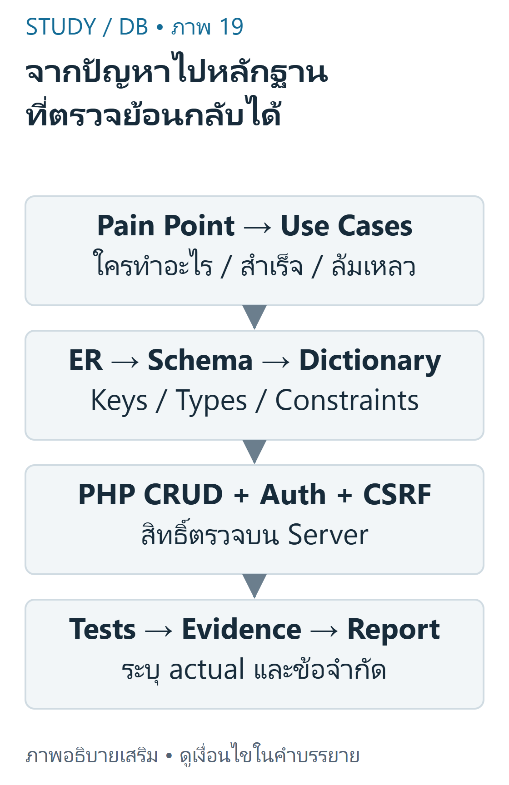
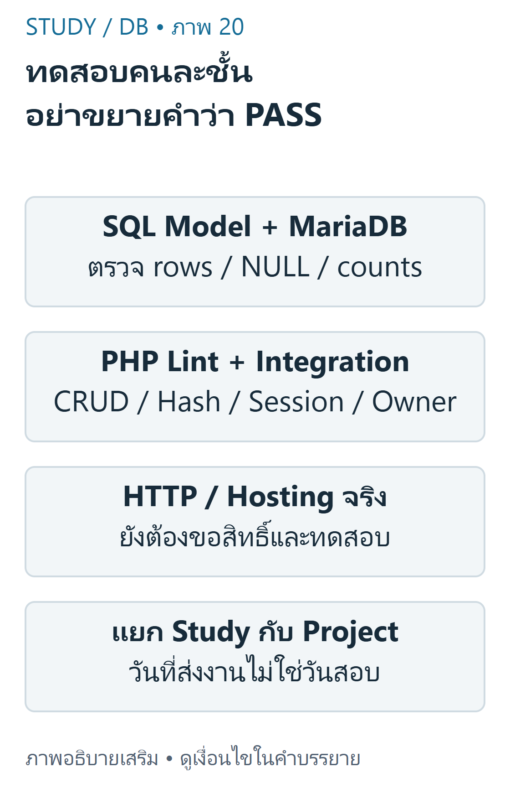

DB 10 — โครงงานฐานข้อมูลแบบบูรณาการ
ใช้DB-S03หน้า29–36และResume/CRUD requirementsเป็นหลัก นี่คือแผนฝึกและตัวอย่างที่เรียบเรียง ไม่ใช่ข้อกำหนดFinalทั้งหมดของรายวิชา
เป้าหมายการเรียนรู้
- เชื่อมPainPoint,UseCase,ER,Schema,DataDictionaryและการทดสอบ
- วางsecureCRUD/Login/ownershipโดยใช้บทก่อนหน้า
- แยกstudychecklistจากprojectdeliveryและรายงานผลตามหลักฐานจริง
จากปัญหาไปความต้องการ
ProblemStatementต้องระบุผู้ใช้และปัญหาที่พบ ไม่เริ่มจากรายการเทคโนโลยีอย่างเดียว ตัวอย่างเสริมคือผู้สมัครต้องอัปเดตทักษะResumeของตนโดยไม่แก้ข้อมูลคนอื่น UseCaseระบุactor/precondition/action/success/failure เช่นเจ้าของLoginแล้วเพิ่มskillที่ผ่านvalidation;ถ้าCSRFผิดต้องไม่เกิดการเขียน

ภาพเขียนเสริม: จากปัญหาไปหลักฐาน ที่ตรวจย้อนกลับได้ — คำแนะนำเสริม ไม่ใช่ syllabus Final ทั้งหมดภาพเขียนเสริม ตรวจตามบทเรียนและเอกสารเทคนิคอ่านภาพ: เริ่ม PainPoint/Requirements/UseCases แล้วทำ ER Schema DataDictionary ลง PHP CRUD/auth และสร้าง testmatrix expected/actual ไม่อ้าง screenshotจำลองว่า deployจริง
DB-S03ระบุโครงงานและการนำเสนอ/รายงาน วันที่31ตุลาคม2026เป็นส่งproposalและ10พฤศจิกายน2026เป็นส่งงานโครงงานจากหน้า34,36 ไม่ใช่วันสอบFinalที่ยืนยันแล้ว ถ้ามีประกาศใหม่ต้องตรวจผู้สอน ไม่อนุมานน้ำหนักคะแนนหรือข้อสอบจากวันที่นี้
แบบจำลองและDataDictionary
ERDiagramแสดงentity/key/cardinality Schemaทำข้อจำกัดจริง และDataDictionaryอธิบายความหมาย/type/nullable/constraint แต่ละfield ทั้งสามต้องสอดคล้องกัน ตัวอย่างสอนต่อยอดpublicschema ไม่ได้แก้ไฟล์ต้นฉบับ
ตัวอย่างพื้นฐานคือprofile1มีskillหลายแถว ตัวอย่างท้าทายคือหนึ่งคนAพยายามแก้skillของB ConstraintFKกันownerที่ไม่มีจริง แต่ไม่รู้ว่าผู้ร้องขอเป็นAหรือB ต้องมีAuthorizationที่PHPด้วย
ลงมือเป็นชั้นและตรวจผล
ลำดับฝึกที่แนะนำ: schema+fixture → SELECT/render → validation+preparedCRUD → Login/Session → ownership+CSRF → errorhandling+tests ลำดับนี้เป็นคำแนะนำเสริม ไม่อ้างว่าเป็นตารางสอนที่ยืนยัน
SQL
1SELECT id,skill_name,skill_level FROM skill2WHERE profile_id=? ORDER BY id;
เครื่องหมาย?เป็นplaceholderของpreparedstatement ไม่ใช่SQLที่pasteรันตรงในphpMyAdminโดยไม่bind ค่าตัวอย่าง1ให้สามแถวตามfixtureทดสอบ ส่วนการอ่านprofile999ที่ไม่มีskillคืนarrayว่าง
PHP
1<?php2// ตัวอย่างcontrollerส่วนที่สำคัญ: helperนิยามในบทDB03/04/083$owner = \StudyDatabase\actorProfile($_SESSION);4\StudyDatabase\checkCsrf($_SERVER['REQUEST_METHOD'], $_POST['csrf'] ?? null, $_SESSION);5$id = \StudyDatabase\positiveId($_POST['id'] ?? null);6$changed = \StudyDatabase\deleteSkill($conn, $owner, $id);7// ตอบกลับ/redirectโดยไม่เปิดเผยรายละเอียดDB; อย่าechoก่อนheader
ผลที่คาด:เจ้าของลบแถวตนได้1แถว ลบซ้ำได้0 และwrongownerได้0โดยข้อมูลเดิมไม่เปลี่ยน ต้องรับexceptionจากguardและแสดงข้อความทั่วไปด้วยHTTPstatusเหมาะสม Controllerย่อนี้ไม่ใช่แอปพร้อมdeployและไม่ควรถอดguardออกเพื่อให้demoผ่าน
ออกแบบหลักฐานการทดสอบ
TestCaseควรมีinput/precondition/expected/actual/evidence ไม่เขียนPASSก่อนรัน ตัวอย่างตารางต่อไปเป็นexpectedของระบบเสริม โดยส่วนhelper/SQLทดสอบอัตโนมัติในfixtureแล้ว ส่วนHTTPบนhostingจริงยังไม่ทำ

ภาพเขียนเสริม: ทดสอบคนละชั้น อย่าขยายคำว่า PASS — 31Oct / 10Nov2026 เป็น milestones ไม่ใช่วันสอบภาพเขียนเสริม ตรวจตามบทเรียนและเอกสารเทคนิคอ่านภาพ: SQLrowmodel/engine,PHP lint,PHPintegration,HTTPบนhostingจริงและdeploymentเป็นคนละหลักฐาน ชุดนี้ทดสอบ MariaDBและPHPCLI แต่ไม่ทดสอบบัญชีหรือhostingจริงAngsila
การทดสอบqueryCampusทั้ง31casesใช้MariaDB11.4.9จริงบนisolatedserverและเทียบกับPythonrowmodel/SQLite3.53.1 แต่นี่ไม่ใช่การรับรองว่าMySQLทุกversionหรือAngsilaเหมือนกัน หากproductionต่างรุ่นต้องทดสอบซ้ำเฉพาะส่วนเกี่ยวข้อง
แยกสิ่งที่ต้องทบทวนและสิ่งที่ต้องส่ง
StudyChecklist: อธิบายrequestflow,PK/FK,JOIN/NULL,CRUD/scopedWHERE,hash/session/CSRF,Gitstates และคำนวณresultrowsเองได้ แก้โจทย์ฝึกก่อนเปิดเฉลย ไม่ถือคะแนนPracticeเป็นคำทำนายสอบ
ProjectChecklist: ระบุปัญหา/requirements,usecases,ER/schema/dictionary,sourceversion,setupREADME,sanitizedfixture,testevidence,reportและข้อจำกัด ให้ผู้สอนอนุมัติการdeployAngsila/hostingที่รองรับPHPก่อน ไม่ใส่secret,photosส่วนตัวหรือdumpจริงในGitHub
READMEควรระบุเวอร์ชันruntime วิธีตั้งconfigผ่านช่องทางที่ไม่public วิธีใช้databaseทดสอบและสิ่งที่ยังไม่รัน อย่าอ้างภาพmockupเป็นหลักฐานdeploymentจริง การนำเสนอควรอธิบายว่าข้อมูลมาจากไหน ใครแก้ได้ และป้องกันผิดพลาดอย่างไร
ข้อผิดพลาดและแบบฝึกคิด
- ข้อ1: ERมีFKแล้วพอป้องกันแก้ข้อมูลคนอื่นหรือไม่? เฉลย: ไม่ FKเช็กreference ไม่เช็กidentityของผู้ร้องขอ
- ข้อ2: CLItestผ่านแปลว่าAngsilaHTTPcookieผ่านหรือไม่? เฉลย: ไม่ ต้องแยกขอบเขตทดสอบ
- ข้อ3: วันที่10พฤศจิกายนคือFinalexamหรือไม่? เฉลย: หลักฐานนี้ระบุprojectdelivery ไม่ยืนยันวันสอบ
สรุปทบทวน
- เชื่อมrequirements→schema→code→testแบบตรวจย้อนกลับได้
- ใช้fixtureจำลองและรายงานactualอย่างซื่อสัตย์ แยกSQL/PHPCLI/HTTP/deployment
- ส่งตามคำสั่งผู้สอนจริง แยกmilestonesจากexamและแยกStudyจากProject
เนื้อหาฝึกเขียนและเฉลยต่อไปนี้เรียบเรียงเพื่อการเรียน ไม่ใช่ข้อสอบจริงหรือเฉลยทางการของผู้สอน เว็บไซต์นี้แสดงตัวอย่างแบบ static; ไม่ส่ง SQL, PHP หรือข้อมูลบัญชีไปรันบนเซิร์ฟเวอร์มหาวิทยาลัย
แหล่งข้อมูลและขอบเขต
DB-S03 หน้า29–36 โดยmilestonesหน้า34,36; DB-Z01 LAB_INSTRUCTIONS.md และDB-Z02 README; schemaภายหลังจากDB-R01. PHP mysqli และ Git documentation เป็นเอกสารเสริมทางเทคนิค ไม่ใช่ข้อสอบของรายวิชา.
บัญชีแหล่งข้อมูลและข้อจำกัด ระบุเลขหน้ากายภาพของ PDF ทุกครั้ง เอกสารต้นฉบับที่ผู้ใช้ให้เป็นไฟล์ local-only และไม่ได้เผยแพร่ซ้ำ ภาพและโจทย์ฝึกเป็นงานเขียนเสริมที่แยกจากต้นฉบับ
โหมดฝึกทำโจทย์
โจทย์ฝึกที่ผู้เขียนจัดทำ ไม่ใช่ข้อสอบจริงหรือเฉลยทางการ; การประเมินตนเองไม่รวมในคะแนนอัตโนมัติ
โจทย์ฝึกที่ผู้เขียนจัดทำ ไม่ใช่ข้อสอบจริง: ProblemStatementควรเริ่มจากอะไร?
- A. รายชื่อframeworkอย่างเดียว
- B. วันสอบที่เดาเอง
- C. ผู้ใช้และPainPointที่ต้องแก้
- D. passwordDB
ทบทวนเนื้อหาที่เกี่ยวข้องอ่านเฉลยและแนวประเมิน
ผู้ใช้และPainPointที่ต้องแก้
requirementsต้องสัมพันธ์ปัญหา ไม่เริ่มจากtechnologylistล้วน
โจทย์ฝึกที่ผู้เขียนจัดทำ ไม่ใช่ข้อสอบจริง: DataDictionaryควรมีอะไร?
- A. passwordจริงของทุกaccount
- B. คะแนนExamที่เดา
- C. GitHubtoken
- D. field,type,meaning,nullable,constraints
ทบทวนเนื้อหาที่เกี่ยวข้องอ่านเฉลยและแนวประเมิน
field,type,meaning,nullable,constraints
อธิบายข้อมูลและข้อจำกัดโดยไม่เก็บsecret
โจทย์ฝึกที่ผู้เขียนจัดทำ ไม่ใช่ข้อสอบจริง: guardลำดับใดเหมาะกับdeleteหนึ่งskill?
- A. sessionidentity→POST/CSRF→validateid→owner-scopedDELETE
- B. DELETEก่อนแล้วค่อยตรวจLogin
- C. เชื่อhiddenownerแล้วDELETE
- D. echoDBpasswordก่อนguard
ทบทวนเนื้อหาที่เกี่ยวข้องอ่านเฉลยและแนวประเมิน
sessionidentity→POST/CSRF→validateid→owner-scopedDELETE
ต้องป้องกันก่อนstatechange
โจทย์ฝึกที่ผู้เขียนจัดทำ ไม่ใช่ข้อสอบจริง: TestCaseที่น่าเชื่อถือควรมีอะไร?
- A. คำว่าPASSโดยไม่รัน
- B. precondition,input,expected,actual,evidence
- C. ภาพmockupอย่างเดียว
- D. คำอ้างว่าทุกBrowserเหมือนกัน
ทบทวนเนื้อหาที่เกี่ยวข้องอ่านเฉลยและแนวประเมิน
precondition,input,expected,actual,evidence
แยกสิ่งที่คาดจากสิ่งที่สังเกตจริง
โจทย์ฝึกที่ผู้เขียนจัดทำ ไม่ใช่ข้อสอบจริง: 10พฤศจิกายน2026ในหลักฐานหมายถึงอะไร?
- A. Finalexamแน่นอน
- B. วันหมดอายุMySQL
- C. กำหนดส่งโครงงาน ไม่ใช่วันสอบที่ยืนยัน
- D. วันหยุดทุกวิชา
ทบทวนเนื้อหาที่เกี่ยวข้องอ่านเฉลยและแนวประเมิน
กำหนดส่งโครงงาน ไม่ใช่วันสอบที่ยืนยัน
sourceระบุprojectmilestoneเท่านั้น
โจทย์ฝึกที่ผู้เขียนจัดทำ ไม่ใช่ข้อสอบจริง: เขียนPainPointและUseCaseเพิ่มskillพร้อมfailureconditions
ทบทวนเนื้อหาที่เกี่ยวข้องอ่านเฉลยและแนวประเมิน
ประเมินคำอธิบายตามเกณฑ์ทีละข้อ; โจทย์นี้ไม่มีคะแนนอัตโนมัติ
- ระบุactor/ปัญหา
- pre/postconditions
- CSRF/owner/validationfail
คลังข้อสอบฝึกเพิ่มเติม
โจทย์ที่ผู้เขียนจัดทำ ไม่ใช่ข้อสอบจริง การประเมินตนเองไม่รวมคะแนน
โจทย์ฝึกที่ผู้เขียนจัดทำ ไม่ใช่ข้อสอบจริง: ProblemStatementควรเริ่มจากอะไร?
- A. รายชื่อframeworkอย่างเดียว
- B. วันสอบที่เดาเอง
- C. ผู้ใช้และPainPointที่ต้องแก้
- D. passwordDB
ทบทวนเนื้อหาที่เกี่ยวข้องอ่านเฉลยและแนวประเมิน
ผู้ใช้และPainPointที่ต้องแก้
requirementsต้องสัมพันธ์ปัญหา ไม่เริ่มจากtechnologylistล้วน
โจทย์ฝึกที่ผู้เขียนจัดทำ ไม่ใช่ข้อสอบจริง: DataDictionaryควรมีอะไร?
- A. passwordจริงของทุกaccount
- B. คะแนนExamที่เดา
- C. GitHubtoken
- D. field,type,meaning,nullable,constraints
ทบทวนเนื้อหาที่เกี่ยวข้องอ่านเฉลยและแนวประเมิน
field,type,meaning,nullable,constraints
อธิบายข้อมูลและข้อจำกัดโดยไม่เก็บsecret
โจทย์ฝึกที่ผู้เขียนจัดทำ ไม่ใช่ข้อสอบจริง: guardลำดับใดเหมาะกับdeleteหนึ่งskill?
- A. sessionidentity→POST/CSRF→validateid→owner-scopedDELETE
- B. DELETEก่อนแล้วค่อยตรวจLogin
- C. เชื่อhiddenownerแล้วDELETE
- D. echoDBpasswordก่อนguard
ทบทวนเนื้อหาที่เกี่ยวข้องอ่านเฉลยและแนวประเมิน
sessionidentity→POST/CSRF→validateid→owner-scopedDELETE
ต้องป้องกันก่อนstatechange
โจทย์ฝึกที่ผู้เขียนจัดทำ ไม่ใช่ข้อสอบจริง: TestCaseที่น่าเชื่อถือควรมีอะไร?
- A. คำว่าPASSโดยไม่รัน
- B. precondition,input,expected,actual,evidence
- C. ภาพmockupอย่างเดียว
- D. คำอ้างว่าทุกBrowserเหมือนกัน
ทบทวนเนื้อหาที่เกี่ยวข้องอ่านเฉลยและแนวประเมิน
precondition,input,expected,actual,evidence
แยกสิ่งที่คาดจากสิ่งที่สังเกตจริง
โจทย์ฝึกที่ผู้เขียนจัดทำ ไม่ใช่ข้อสอบจริง: 10พฤศจิกายน2026ในหลักฐานหมายถึงอะไร?
- A. Finalexamแน่นอน
- B. วันหมดอายุMySQL
- C. กำหนดส่งโครงงาน ไม่ใช่วันสอบที่ยืนยัน
- D. วันหยุดทุกวิชา
ทบทวนเนื้อหาที่เกี่ยวข้องอ่านเฉลยและแนวประเมิน
กำหนดส่งโครงงาน ไม่ใช่วันสอบที่ยืนยัน
sourceระบุprojectmilestoneเท่านั้น
โจทย์ฝึกที่ผู้เขียนจัดทำ ไม่ใช่ข้อสอบจริง: เขียนPainPointและUseCaseเพิ่มskillพร้อมfailureconditions
ทบทวนเนื้อหาที่เกี่ยวข้องอ่านเฉลยและแนวประเมิน
ประเมินคำอธิบายตามเกณฑ์ทีละข้อ; โจทย์นี้ไม่มีคะแนนอัตโนมัติ
- ระบุactor/ปัญหา
- pre/postconditions
- CSRF/owner/validationfail
โจทย์ฝึกที่ผู้เขียนจัดทำ ไม่ใช่ข้อสอบจริง: UseCaseเพิ่มskillควรระบุfailurecaseใด?
- A. CSRFผิดต้องไม่เขียนข้อมูล
- B. ทุกinputต้องผ่าน
- C. ถ้าownerผิดให้แก้ของคนอื่น
- D. ถ้าข้อมูลว่างให้DROP
ทบทวนเนื้อหาที่เกี่ยวข้องอ่านเฉลยและแนวประเมิน
CSRFผิดต้องไม่เขียนข้อมูล
success/failureช่วยออกแบบtestและsecurity
โจทย์ฝึกที่ผู้เขียนจัดทำ ไม่ใช่ข้อสอบจริง: ER/Schema/DataDictionaryควรสัมพันธ์กันอย่างไร?
- A. เป็นเอกสารแยกไม่ต้องตรง
- B. entity/key/cardinality/typeต้องสอดคล้อง
- C. ERแทนruntimeทุกอย่าง
- D. dictionaryใช้แทนFKconstraint
ทบทวนเนื้อหาที่เกี่ยวข้องอ่านเฉลยและแนวประเมิน
entity/key/cardinality/typeต้องสอดคล้อง
traceabilityช่วยพบช่องว่างระหว่างแบบกับimplementation
โจทย์ฝึกที่ผู้เขียนจัดทำ ไม่ใช่ข้อสอบจริง: placeholder?ในSQLตัวอย่างนำไปpastephpMyAdminได้เลยหรือไม่?
- A. ได้ทุกinterfaceโดยไม่bind
- B. ทำให้sessionเปิดเอง
- C. ไม่ ต้องbindผ่านpreparedAPIหรือแทนค่าทดสอบอย่างถูกบริบท
- D. คือwildcardแทนทุกrow
ทบทวนเนื้อหาที่เกี่ยวข้องอ่านเฉลยและแนวประเมิน
ไม่ ต้องbindผ่านpreparedAPIหรือแทนค่าทดสอบอย่างถูกบริบท
?เป็นparameterplaceholderของstatementAPI ไม่ใช่ค่าที่serverรู้เอง
โจทย์ฝึกที่ผู้เขียนจัดทำ ไม่ใช่ข้อสอบจริง: wrongownerdeleteควรตรวจอะไรนอกจากaffectedrows0?
- A. สีbuttonเปลี่ยน
- B. ชื่อbranchตรง
- C. faviconโหลด
- D. ข้อมูลของเจ้าของจริงยังอยู่ไม่เปลี่ยน
ทบทวนเนื้อหาที่เกี่ยวข้องอ่านเฉลยและแนวประเมิน
ข้อมูลของเจ้าของจริงยังอยู่ไม่เปลี่ยน
ตรวจstateหลังปฏิเสธ ไม่พอแค่returncode
โจทย์ฝึกที่ผู้เขียนจัดทำ ไม่ใช่ข้อสอบจริง: StudyChecklistกับProjectChecklistต่างกันอย่างไร?
- A. ทบทวนความเข้าใจ กับหลักฐานงานที่ต้องส่ง
- B. ทั้งคู่เป็นofficialexamkey
- C. StudyChecklistมีsecret
- D. ProjectChecklistแทนผู้สอนทุกประกาศ
ทบทวนเนื้อหาที่เกี่ยวข้องอ่านเฉลยและแนวประเมิน
ทบทวนความเข้าใจ กับหลักฐานงานที่ต้องส่ง
แยกการเตรียมเรียนกับdeliverablesและตรวจคำสั่งจริง
โจทย์ฝึกที่ผู้เขียนจัดทำ ไม่ใช่ข้อสอบจริง: การตั้งวันสอบFinalเองจากวันส่งproposalเหมาะหรือไม่?
- A. เหมาะเพราะใกล้กัน
- B. ไม่ ต้องมีหลักฐานประกาศวันสอบ
- C. เหมาะถ้าทุกคนเดาตรง
- D. เหมาะเพราะGitcommitมีdate
ทบทวนเนื้อหาที่เกี่ยวข้องอ่านเฉลยและแนวประเมิน
ไม่ ต้องมีหลักฐานประกาศวันสอบ
ไม่อนุมานexamdate/weightจากprojectmilestone
โจทย์ฝึกที่ผู้เขียนจัดทำ ไม่ใช่ข้อสอบจริง: FKมีจริงแต่Aแก้ของBได้ แปลว่าอะไร?
- A. FKป้องกันทุกอย่างแล้วจึงไม่มีbug
- B. ต้องลบFK
- C. applicationauthorizationยังผิดแม้integrityผ่าน
- D. ต้องเพิ่มCSS
ทบทวนเนื้อหาที่เกี่ยวข้องอ่านเฉลยและแนวประเมิน
applicationauthorizationยังผิดแม้integrityผ่าน
constraintไม่ทราบactoridentity
โจทย์ฝึกที่ผู้เขียนจัดทำ ไม่ใช่ข้อสอบจริง: ลำดับฝึกschema→SELECT→CRUD→authที่เสนอเป็นอะไร?
- A. officialteachingorderทุกสัปดาห์
- B. ข้อสอบFinalลำดับจริง
- C. หลักฐานว่าAngsilaผ่าน
- D. คำแนะนำการเรียนเสริม ไม่ใช่ตารางสอนยืนยัน
ทบทวนเนื้อหาที่เกี่ยวข้องอ่านเฉลยและแนวประเมิน
คำแนะนำการเรียนเสริม ไม่ใช่ตารางสอนยืนยัน
ต้องแยกrecommendationจากsource
โจทย์ฝึกที่ผู้เขียนจัดทำ ไม่ใช่ข้อสอบจริง: PHPCLItestsผ่านควรรายงานHTTPcookieบนAngsilaอย่างไร?
- A. ยังไม่ทดสอบจริง
- B. PASSทั้งหมดทุกdevice
- C. ไม่มีข้อจำกัด
- D. ทดสอบแล้วเพราะมีURL
ทบทวนเนื้อหาที่เกี่ยวข้องอ่านเฉลยและแนวประเมิน
ยังไม่ทดสอบจริง
ขอบเขตCLIไม่ครอบคลุมhosting/browsertransport
โจทย์ฝึกที่ผู้เขียนจัดทำ ไม่ใช่ข้อสอบจริง: ก่อนdeployAngsilaควรมีอะไร?
- A. rootpasswordที่เดา
- B. สิทธิ์และคำแนะนำhostingที่ผู้สอน/ผู้ดูแลอนุมัติ
- C. การpush.envpublic
- D. การรันDROPในDBเดิม
ทบทวนเนื้อหาที่เกี่ยวข้องอ่านเฉลยและแนวประเมิน
สิทธิ์และคำแนะนำhostingที่ผู้สอน/ผู้ดูแลอนุมัติ
ไม่แตะsharedserverโดยไม่ได้รับอนุญาต
โจทย์ฝึกที่ผู้เขียนจัดทำ ไม่ใช่ข้อสอบจริง: ResumePainPointตัวอย่างเสริมควรถูกอ้างอย่างไร?
- A. คำพูดผู้สอนตรงทุกคำ
- B. โจทย์Finalจริง
- C. ตัวอย่างที่ผู้เขียนเรียบเรียงจากบริบทแลป
- D. งานที่ผู้สอนให้คะแนนแล้ว
ทบทวนเนื้อหาที่เกี่ยวข้องอ่านเฉลยและแนวประเมิน
ตัวอย่างที่ผู้เขียนเรียบเรียงจากบริบทแลป
authoredexampleไม่ใช่officialquotation
โจทย์ฝึกที่ผู้เขียนจัดทำ ไม่ใช่ข้อสอบจริง: skill_levelNULLในdictionaryควรอธิบายว่าอะไร?
- A. ไม่มีskillrowเสมอ
- B. passwordว่าง
- C. FKไม่ทำงาน
- D. ยังไม่ระบุระดับในrowที่มีได้
ทบทวนเนื้อหาที่เกี่ยวข้องอ่านเฉลยและแนวประเมิน
ยังไม่ระบุระดับในrowที่มีได้
nullablefieldต้องแยกabsenceของrow
โจทย์ฝึกที่ผู้เขียนจัดทำ ไม่ใช่ข้อสอบจริง: ผลdeleteครั้งแรก1ครั้งซ้ำ0ควรสรุปอย่างไร?
- A. ครั้งแรกเปลี่ยน1row ครั้งถัดไปไม่มีrowตรงในfixture
- B. ครั้งซ้ำต้องลบprofileเอง
- C. 0แปลว่าDBล่มเสมอ
- D. 1แปลว่าทุกrowถูกลบ
ทบทวนเนื้อหาที่เกี่ยวข้องอ่านเฉลยและแนวประเมิน
ครั้งแรกเปลี่ยน1row ครั้งถัดไปไม่มีrowตรงในfixture
อ่านผลตามqueryและprecondition ไม่ขยายความเกินจริง
โจทย์ฝึกที่ผู้เขียนจัดทำ ไม่ใช่ข้อสอบจริง: สร้างprofileแล้วusersinsertล้ม กรณีทดสอบควรตรวจอะไร?
- A. HTMLมีสีเขียว
- B. transactionrollbackไม่ทิ้งprofileกำพร้า
- C. ทุกpasswordเท่ากัน
- D. Gitbranchชื่อmain
ทบทวนเนื้อหาที่เกี่ยวข้องอ่านเฉลยและแนวประเมิน
transactionrollbackไม่ทิ้งprofileกำพร้า
ตรวจatomicstateจริงหลังfailure
โจทย์ฝึกที่ผู้เขียนจัดทำ ไม่ใช่ข้อสอบจริง: รายงานโครงงานควรแสดงข้อจำกัดหรือไม่?
- A. ไม่ควรเพื่อให้ดูครบ
- B. ควรแต่งmeasurementแทน
- C. ควร ระบุส่วนที่ยังไม่ทดสอบและเงื่อนไขruntime
- D. ควรอ้างmockupเป็นserverจริง
ทบทวนเนื้อหาที่เกี่ยวข้องอ่านเฉลยและแนวประเมิน
ควร ระบุส่วนที่ยังไม่ทดสอบและเงื่อนไขruntime
ความซื่อสัตย์ของevidenceสำคัญกว่าคำว่าPASS
โจทย์ฝึกที่ผู้เขียนจัดทำ ไม่ใช่ข้อสอบจริง: MariaDB11.4.9ผ่านรับรองMySQLทุกversionหรือไม่?
- A. รับรองทุกSQLdialect
- B. รับรองSQLiteเท่ากันหมด
- C. รับรองOracleทุกquery
- D. ไม่ ต้องทดสอบส่วนต่างตามversionจริง
ทบทวนเนื้อหาที่เกี่ยวข้องอ่านเฉลยและแนวประเมิน
ไม่ ต้องทดสอบส่วนต่างตามversionจริง
engine/version/libraryassumptionsต้องชัด
โจทย์ฝึกที่ผู้เขียนจัดทำ ไม่ใช่ข้อสอบจริง: users.password_hashควรส่งในหน้าResumepublicหรือไม่?
- A. ไม่ เป็นข้อมูลภายในที่ไม่จำเป็นต่อpresentation
- B. ควรแสดงเพื่อdebugทุกคน
- C. ควรใช้เป็นaltภาพ
- D. ควรใส่ในURL
ทบทวนเนื้อหาที่เกี่ยวข้องอ่านเฉลยและแนวประเมิน
ไม่ เป็นข้อมูลภายในที่ไม่จำเป็นต่อpresentation
เลือกprojectionและoutputอย่างจำกัด
โจทย์ฝึกที่ผู้เขียนจัดทำ ไม่ใช่ข้อสอบจริง: Repoสำหรับส่งควรรวมอะไรแทนphotos/privateDBdump?
- A. ข้อมูลผู้ใช้จริงเพื่อให้ครบ
- B. โค้ด/schema/fixtureจำลอง/READMEและtestevidenceที่reviewแล้ว
- C. .envค่าจริง
- D. sessioncookieของผู้สอน
ทบทวนเนื้อหาที่เกี่ยวข้องอ่านเฉลยและแนวประเมิน
โค้ด/schema/fixtureจำลอง/READMEและtestevidenceที่reviewแล้ว
ส่งงานได้โดยไม่เผยprivateoperationaldata
โจทย์ฝึกที่ผู้เขียนจัดทำ ไม่ใช่ข้อสอบจริง: ตัวcontrollerย่อที่แสดงguardบางส่วนเป็นแอปพร้อมproductionหรือไม่?
- A. พร้อมทุกhostingทันที
- B. พร้อมเมื่อrename.php
- C. ไม่ ยังต้องHTTPerrorhandling/config/transportและtests
- D. พร้อมถ้าquizได้เต็ม
ทบทวนเนื้อหาที่เกี่ยวข้องอ่านเฉลยและแนวประเมิน
ไม่ ยังต้องHTTPerrorhandling/config/transportและtests
teachingfragmentระบุpreconditionsและขอบเขต
โจทย์ฝึกที่ผู้เขียนจัดทำ ไม่ใช่ข้อสอบจริง: Practiceคะแนนสูงพิสูจน์อะไรเกี่ยวกับFinalexam?
- A. รับรองได้A
- B. บอกข้อสอบจริงทั้งหมด
- C. แทนการอ่านแหล่งสอน
- D. เป็นผลโจทย์ฝึกที่ทำ ไม่ใช่คำทำนายคะแนนสอบ
ทบทวนเนื้อหาที่เกี่ยวข้องอ่านเฉลยและแนวประเมิน
เป็นผลโจทย์ฝึกที่ทำ ไม่ใช่คำทำนายคะแนนสอบ
ไม่สร้างmasterypredictionหรือexamguaranteeจากquiz
โจทย์ฝึกที่ผู้เขียนจัดทำ ไม่ใช่ข้อสอบจริง: เชื่อมERschemaDataDictionaryของResume
ทบทวนเนื้อหาที่เกี่ยวข้องอ่านเฉลยและแนวประเมิน
ประเมินคำอธิบายตามเกณฑ์ทีละข้อ; โจทย์นี้ไม่มีคะแนนอัตโนมัติ
- keys/cardinalityตรง
- nullable/typeชัด
- usersmigrationแยกระยะ
โจทย์ฝึกที่ผู้เขียนจัดทำ ไม่ใช่ข้อสอบจริง: เขียนtestmatrixownerA/Bรวมrollbackและemptyresult
ทบทวนเนื้อหาที่เกี่ยวข้องอ่านเฉลยและแนวประเมิน
ประเมินคำอธิบายตามเกณฑ์ทีละข้อ; โจทย์นี้ไม่มีคะแนนอัตโนมัติ
- expected/actualแยก
- ตรวจstateไม่ใช่แค่status
- ใช้fixtureแยก
โจทย์ฝึกที่ผู้เขียนจัดทำ ไม่ใช่ข้อสอบจริง: จัดStudyChecklistกับProjectChecklistคนละรายการ
ทบทวนเนื้อหาที่เกี่ยวข้องอ่านเฉลยและแนวประเมิน
ประเมินคำอธิบายตามเกณฑ์ทีละข้อ; โจทย์นี้ไม่มีคะแนนอัตโนมัติ
- ความเข้าใจไม่ปนsubmission
- วันที่sourceเป็นmilestone
- ตรวจคำสั่งผู้สอนจริง
โจทย์ฝึกที่ผู้เขียนจัดทำ ไม่ใช่ข้อสอบจริง: เขียนรายงานขอบเขตverificationที่ไม่อ้างเกินหลักฐาน
ทบทวนเนื้อหาที่เกี่ยวข้องอ่านเฉลยและแนวประเมิน
ประเมินคำอธิบายตามเกณฑ์ทีละข้อ; โจทย์นี้ไม่มีคะแนนอัตโนมัติ
- SQLengine/versionจริง
- PHPCLIvsHTTP
- Angsilaและdeviceที่ไม่ทดสอบ